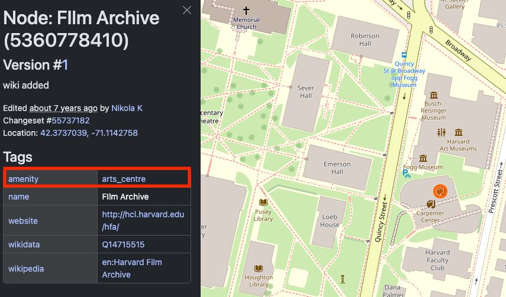

Activity 5
of 5
4. OpenStreetMap
Learn how to access crowdsourced GIS data for situations where data is difficult to find.
- Understand what OpenStreetMap (OSM) is, and how it can be helpful for finding data
In class activity
- Visit OpenStreetMap.org, which we can think of as the Wikipedia of GIS. It is free, crowd-contributed geospatial data.
- Navigate to anywhere in the world you are interested in.
- Zoom super close in so that you can see individual features, such as buildings, roads, or bike lanes.
- Right-click a feature and select
Query features.
- Select one of the features, whether it’s a
Building,Residential Road,Footpath, or another kind of feature.
- Inspect the way that the attributes about this kind of feature are encoded. For instance, notice how the Harvard Film Archive in the Carpenter Center is tagged as
amentiy=arts_centre:

- Try the same exercise for another type of environment. For example, if you picked a city initially, inspect features typical to a desert, or somewhere with lots of bodies of water.
- Later we will explore how to download layers of feature types, for instance, all of the places tagged as
arts_centrefor a certain place. For now, look through the OpenStreetMap wiki page of Map Features to get a sense of all the different kinds of feature layers are available to extract.
Demo and explore more
Sample data
You can download and explore sample datasets related to this activity from the workshop data homepage, hosted on the Open Science Framework (OSF.io)
- Visit the workshop data homepage.
- Click the three vertical dots icon and select
Download.

- The folder that downloads to your computer contains sample data from all the workshop activities. It is a zipped or compressed file. In order to use it, you will have to
double-clickit on Mac orright-click→ExtractorUncompresson a PC.
4. The sample data for this activity, Activity 4 is in the folder activity4_crowdsourced. In this folder you will find the following files:
places_of_worship_polygons_ma.geojsonplaces_of_worship_points_ma.geojson
Follow-along steps
- We are going to use the detailed steps outlined in the How To Export Data from Overpass-turbo.edu section of the Accessing OSM data guide.
- Once we are on overpass-turbo.eu and have opened the
Wizardto build our query:
- Type in
amenity=place_of_worship in Massachusettsand selectRun and Build Query.
If you get an error, change the
timeoutvariable in the query builder text box to 900 seconds.
- You may need to change the extent of the map to the area of interest (e.g. Massachusetts) to have the results show up.
- Once data is displayed, you can select
Export→Data→GeoJSON. - To use this dataset in ArcGIS Pro, follow the steps in How to Import GeoJSON Into ArcGIS Pro.
- To look at the variables, right-click the layer in the layer list and select
Attribute Table. Notice which columns are and aren’t populated. - We are going to symbolize based on the
religionfield. Right-click the layer in the layer list and selectSymbology. - Change
Primary symbologyfromSingle SymboltoUnique valuesand selectreligionas the field to symbolize.